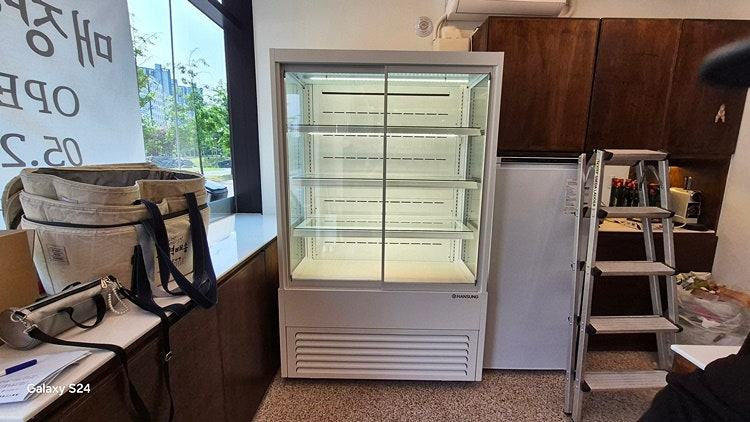
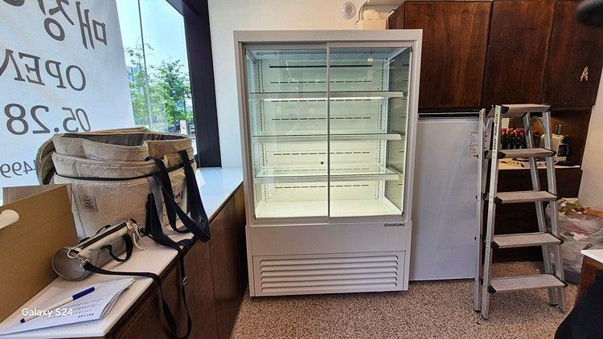
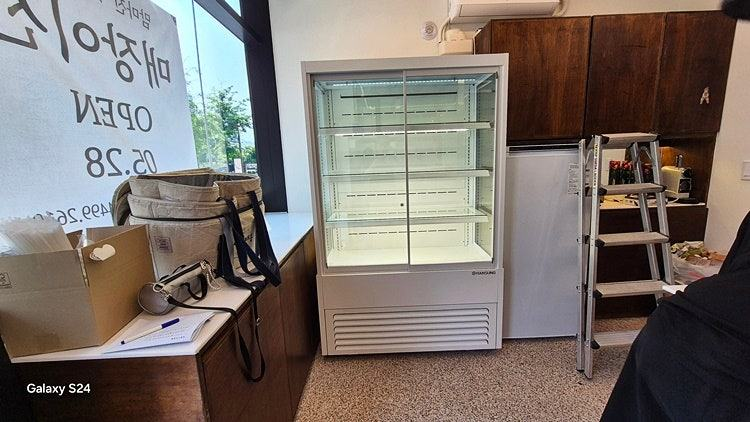
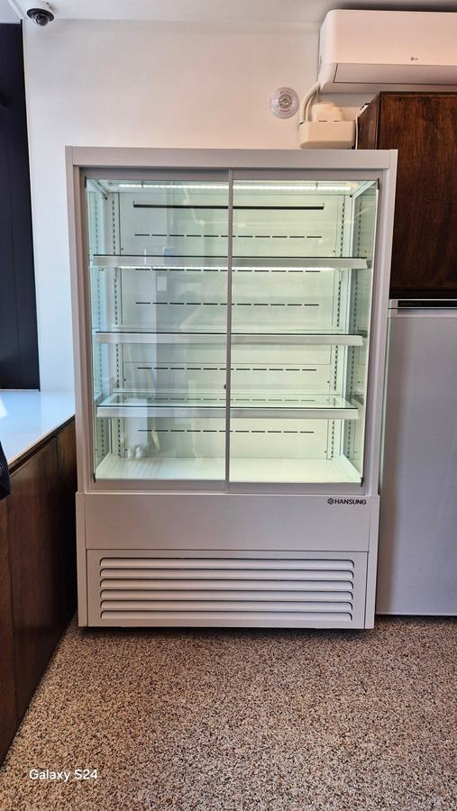
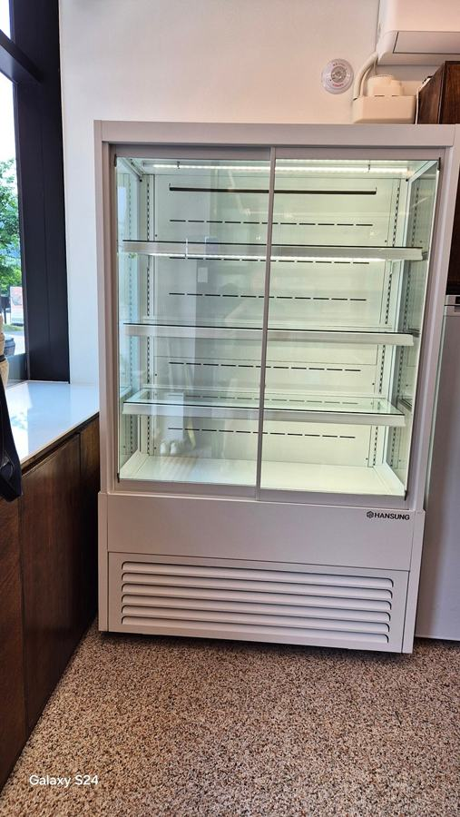
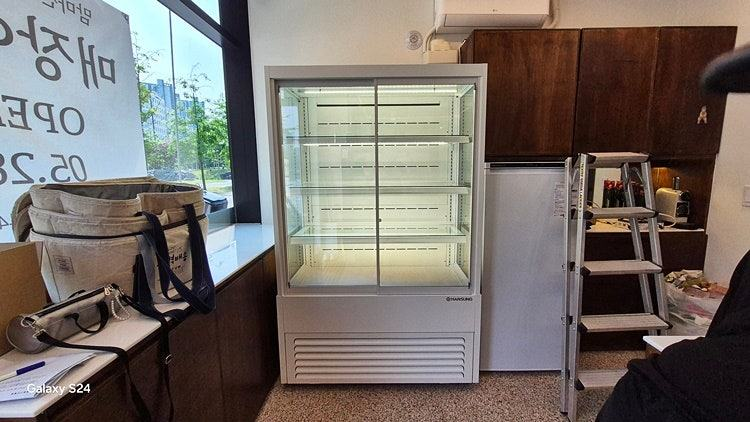
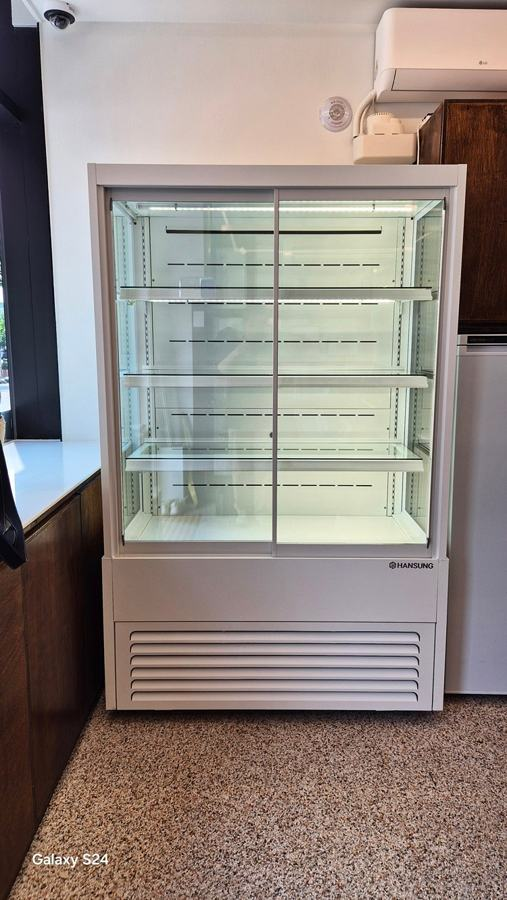

반찬(진열)쇼케이스
반찬쇼케이스 조명, 김치·나물·조림 색이 달라 보이는 이유

반찬쇼케이스 조명은 김치의 붉은색, 나물의 초록색, 조림의 윤기가 모두 자연스럽게 보이는 색을 고르고, 반찬 위를 고르게 비추되 유리에 번쩍이는 반사가 생기지 않는 위치에 다는 것이 핵심입니다. 발열이 적은 LED를 써야 반찬 표면이 마르지 않고 내부 온도도 흔들리지 않습니다.
안녕하세요. 반찬가게 진열장을 동선과 조명까지 함께 설계하는 한성쇼케이스입니다.
같은 반찬인데 어느 가게에서는 갓 무친 것처럼 보이고, 어느 가게에서는 하루 지난 것처럼 보일 때가 있습니다.
맛은 그대로인데 손님의 손이 가는 쪽은 분명히 다르죠. 그 차이를 만드는 것 중 하나가 쇼케이스 조명입니다.
반찬가게는 한 진열장 안에 빨간 김치, 초록 나물, 갈색 조림, 노란 계란말이가 함께 놓입니다. 색이 다양한 만큼 조명 하나가 어느 반찬을 살리고 어느 반찬을 죽일지 갈리기 쉽습니다.
오늘은 반찬쇼케이스 조명을 고를 때 볼 빛의 색, 다는 위치, 유리 반사와 발열을 차례로 짚고, 실제로 조명과 동선을 바꾼 반찬가게 사례를 소개해 드리겠습니다.
1. 빛의 색: 모든 반찬이 자연스러워야
노란빛이 강한 전구색은 조림과 전 같은 갈색 반찬을 따뜻하게 보이게 하지만, 나물의 초록을 누렇게 만들고 김치를 칙칙하게 보이게 할 수 있습니다.
반대로 푸른빛이 도는 차가운 조명은 반찬 전체를 창백하게 보이게 해 신선함보다는 차갑고 딱딱한 인상을 줍니다.
여러 색의 반찬이 함께 놓이는 반찬쇼케이스는 그 중간쯤에서 식품 본연의 색을 살리는 조명을 고르는 경우가 많습니다.
실제 반찬을 담아 놓고 조명 색을 바꿔 가며 비교해 보시면 차이가 바로 보입니다.
- 김치·나물·조림을 함께 놓고 비교
- 매장 천장 조명 색과의 조화 확인
2. 다는 위치와 그림자
조명이 한쪽에만 있으면 깊은 반찬 통 안쪽에 그림자가 져서 반찬이 덜 담긴 것처럼 보입니다. 통 위를 고르게 비추도록 앞쪽과 뒤쪽 위치를 나누거나, 진열 각도를 손님 쪽으로 기울여 빛이 통 안까지 들어가게 하는 방법이 있습니다.
단이 여러 개라면 아래 칸이 어두워지기 쉬우니 단마다 조명을 넣을지 검토해 보세요. 손님 눈높이 칸과 아래 칸의 밝기 차이가 크면 아래 반찬은 손이 덜 갑니다.
오픈형 반찬쇼케이스라면 손님이 반찬을 고르며 몸을 숙일 때 조명이 눈에 바로 들어오지 않도록 조명 커버 각도도 함께 살펴보세요.


3. 유리 반사와 결로
조명이 유리 쪽을 향하거나 매장 천장 조명이 유리에 비치면 손님 눈에는 반찬 대신 번쩍이는 빛이 먼저 들어옵니다.
조명 방향은 반찬을 향하게 하고, 유리 각도와 매장 조명 위치를 함께 고려해야 합니다.
아무리 좋은 조명도 유리에 결로가 맺히면 반찬이 축축하고 흐릿해 보입니다. 결로를 최소화하는 유리 사양은 조명과 한 세트로 생각하시는 게 좋습니다.
- 조명 방향은 반찬 쪽으로
- 천장 조명이 유리에 비치지 않는지
- 결로 방지 유리 함께 검토
4. 발열과 교체 관리
조명에서 나오는 열은 반찬 표면을 말리고 쇼케이스 내부 온도를 흔듭니다. 특히 뚜껑 없이 진열하는 반찬은 조명 바로 아래 칸이 먼저 마르니, 발열이 적은 LED를 쓰는 것이 기본입니다.
조명이 하나만 나가도 그 칸 반찬이 눈에 띄게 어두워집니다. 깜빡임이 시작되면 미루지 말고 교체하고, 청소할 때 조명 커버의 양념 얼룩도 함께 닦아 주세요.
체크리스트
- 반찬 색이 모두 자연스러운 조명 색
- 통 안쪽까지 비추는 위치
- 유리 반사와 결로 방지
- 발열 적은 LED
- 깜빡임 즉시 교체, 커버 청소
강서구 7평 반찬가게 쇼케이스 교체 사례
서울 강서구에 있는 7평 규모 반찬가게입니다. 처음에는 중고 쇼케이스로 운영하셨는데, 시간이 지나면서 보관 시간이 짧아져 신선도가 떨어지고, 바깥 온도에 따라 내부 온도가 고르게 유지되지 않았으며, 매장 동선과 인테리어에도 어울리지 않아 매장 이미지에 영향을 주고 있었습니다.
한성쇼케이스는 이 문제들을 바탕으로 동선과 조명, 인테리어를 함께 고려해 반찬쇼케이스를 설치했습니다.
3~7도 범위의 일정한 온도 유지, 반찬 색감을 살리는 LED 조명, 결로를 줄인 진열 구조를 적용했고, 얼마 뒤 사장님께서 매장이 밝아졌고 반찬이 훨씬 맛있어 보인다는 손님 반응이 이어진다고 전해 주셨습니다.









자주 묻는 질문
기존 쇼케이스 조명만 바꿀 수 있나요?
구조에 따라 LED로 교체가 가능한 경우가 많습니다. 다만 결로나 온도 유지에 문제가 함께 있다면 조명 교체만으로는 진열 인상이 크게 달라지지 않을 수 있습니다.
반찬 종류별로 조명 색을 다르게 할 수 있나요?
칸이나 단을 나눠 조명을 따로 넣는 구성은 가능합니다. 다만 한 진열장 안에서 색이 너무 다르면 산만해 보일 수 있으니 실제 반찬으로 비교해 보고 정하시길 권합니다.
조명이 밝을수록 반찬이 잘 팔리나요?
밝기만 높이면 유리 반사와 발열이 늘어 오히려 반찬이 마르고 보기 불편해질 수 있습니다. 밝기보다 색과 위치, 고르게 비추는지가 더 중요합니다.
매장 조건에 맞춰 만드는 한성쇼케이스
원하시는 제품 사진과 설치할 공간 사진만 보내 주셔도 매장에 맞는 구성을 추천해 드립니다.
- 전국 240여 개 A/S 전담 센터 운영
- 본사 대량 자재 매입으로 품질 대비 합리적인 가격
- 유럽제·삼성 냉각 콤프레셔 적용
- 국내 최초 쇼케이스 전문 디자이너 상주
매장 폭과 원하는 진열 구성을 알려 주세요. 실측과 견적을 안내해 드립니다.
031-986-2458